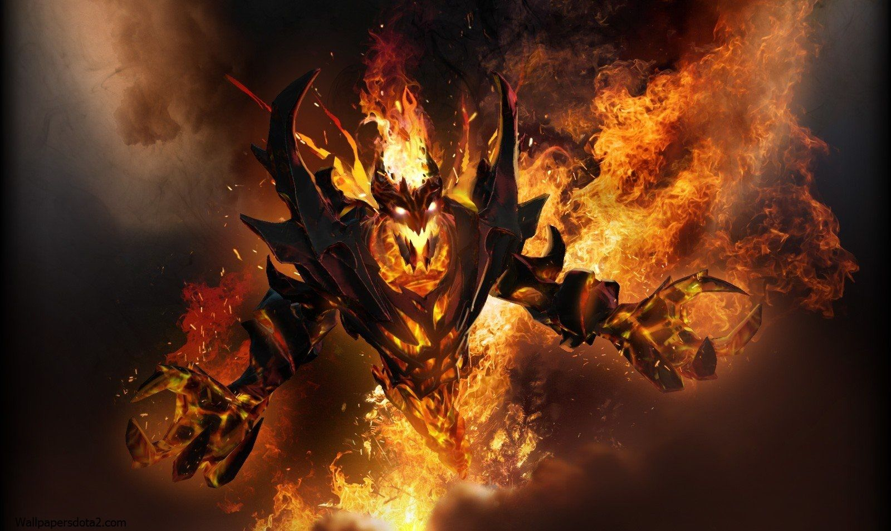
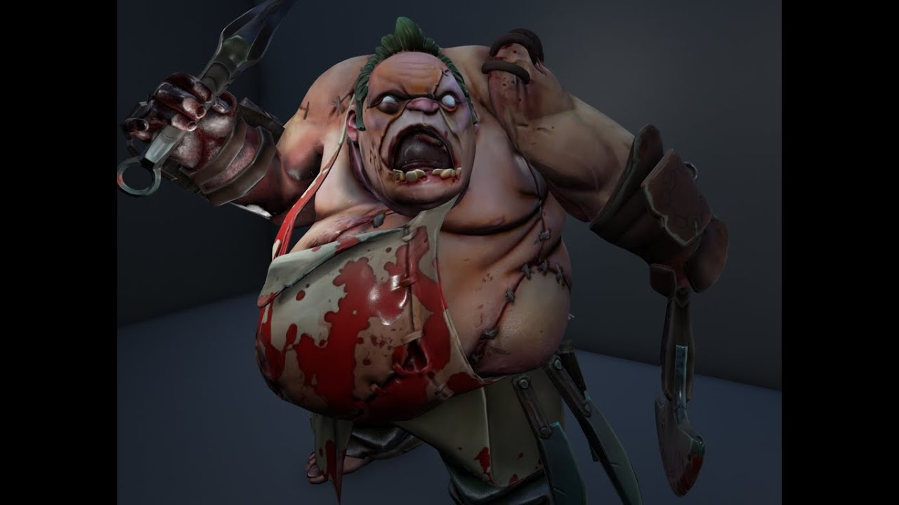
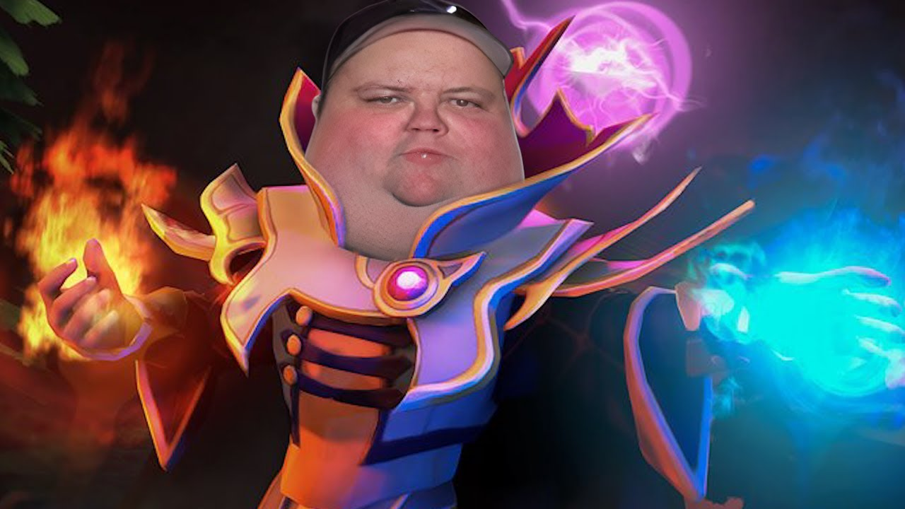

Обзор на персонажей Dota2
Всего в игре Dota2 123
Персонажа. Пройдёмся по ним.
Shadow Fiend

- Основной атрибут:Ловкость
- Скорость атаки:Быстрая
- Способности: Бёрст урон. Ульта выступает в роли Save
- Добыча золота: Быстрая
- Файт потенциал: НОРМАЛЬНЫЙ
Pudge

- Основной атрибут:Сила
- Скорость атаки:Медленная
- Способности: Иницитиатора. Ульта используется для оглушения Enemy
- Добыча золота: Медленная
- Файт потенциал:ВЕЛИКИЙ
Invoker

- Основной атрибут:Интеллект
- Скорость атаки:Умеренная
- Способности: Их больше 10. Ульта используется в цели каста способностей
- Добыча золота: Мега быстрая
- Файт потенциал:УЛЬТРА_МЕГА_ХОРОШ
SHADOW FIEND
История:
Говорят, у Невермора душа поэта, но на самом деле у него их тысячи. Веками он
поглощал души стихотворцев,
священников, императоров, нищих, рабов, философов, преступников и, естественно, героев. Не скрыться от
него
ни душе. Никто не знает, что он с ними делает. Никто не вглядывался в Бездну, где среди астральных скал
Невермор таится, словно змея. Пожирает ли он души одну за другой? Выставляет ли он их трофеями в
коридорах
зловещего храма? Маринует ли в чернокнижном рассоле? А может, он — лишь марионетка, которой кукловодит
зловещий разум извне пространства? Таково его зло, настолько силен его тёмный дух, что разумом его не
понять. А если вам всё же очень хочется разузнать, что он делает с душами, то всё просто:
присоединяйтесь к
его коллекции. Или просто подождите: Невермор уже идёт к вам.
Голос: Борис Быстров
( Реплики)
Факты
-
Альтернативное имя героя в DotA было «YaphetS», одного из лучших
игроков на данном герое.
-
Имя «Nevermore», скорее всего, является отсылкой к поэме
Эдгара Аллена По «Ворон(The Raven)».
-
Фраза «Never say Nevermore…» является отсылкой к фильму о Джеймсе Бонде «Никогда не говори никогда».
-
Отчасти, модель Shadow Fiend была изменена не только по просьбам фанатов, но и для того, чтобы обойти
законы о цензуре в некоторых странах, одной из которых является Китай.
История:
На полях Вечной бойни, далеко на юге от Квойджа, тучная фигура упорно трудится под покровом ночи — убирает, а
затем расчленяет, потрошит, сгружает в кучи конечности и внутренние органы павших. И все это лишь для того,
чтобы на следующее утро бойня могла повториться. В том проклятом мире ничто не разлагается само по себе —
мертвецам никогда не суждено вернуться обратно в землю, и не важно, насколько глубока могила. Окруженный стаями
птиц-падальщиков, которым нужны порезанные кусочки трупов, мясник Pudge упражняется с лезвиями, которые
затачиваются от резки трупов. Вжик-вжик-тух. Плоть отсекается от костей, связки и сухожилия отрываются как
кусочки мокрой бумаги. И хоть у Pudge всегда было пристрастие к мясницкому ремеслу, со временем тучный здоровяк
полюбил и то, что получается, когда он заканчивает работу над трупом. Сначала кусочек мускула там, глоточек
крови... Вскоре Pudge уже вгрызался в тела самых крепких существ подобно грызущей кость собаке. Даже те, кто не
питает страха перед жнецом Смерти, предпочитают не связываться с мясником.
Голос:
Владимир
Антоник
( Реплики)
Факты
-
Притягивая врага своим Meat Hook Pudge иногда может произнести фразу «Get over here!»,[1] которая
принадлежит персонажу Scorpion из Mortal Kombat.
-
Персонаж Мясника в DotA основан на боссе из Diablo. Самое большое их сходство заключается в одинаковом
аудиофайле, в котором произносится фраза «Fresh Meat».
История:
Магия в своей самой ранней, даже можно сказать, самой мощной форме, всегда являлась в основном искусством
памяти. Она не требовала техник, палочек или других принадлежностей, за исключением разума самого чародея. Всё,
что ему было нужно — мнемонические средства, помогающие колдующему вспомнить в полных деталях ту психологическую
формулу, что раскроет магическую силу. Величайшие волшебники тех дней были одарены отличной памятью, а сами
заклинания были настолько сложны и громоздки, что чародеи были вынуждены на чем-то специализироваться. Однако
даже самые отличные волшебники могли надеяться лишь на то, что они запомнят за всю свою жизнь три-четыре
заклинания, не более. Обычные маги знали всего два заклинания, так что это не такое уж и необычное явление,
когда деревенский чародей знал только одно заклинание, да и то требовало титанических усилий, куч подсказок и
инструкций, работающих, как лекарство от забывчивости, в те редкие случаи, когда это самое заклинание просили
продемонстрировать. Но среди всех этих волшебников было всего одно, но гениальное и владеющее огромной памятью
исключение, и имя ему — Invoker. Уже в своей юности взрослый не по годам волшебник сумел набить руку на
использовании не четырех, не пяти, и даже не семи, а не менее десятка заклинаний, которые он сотворял
практически мгновенно! Еще больше он уже и так знал, но просто считал бесполезными. Одно из его заклинаний —
Sempiternal Cantrap — было такой огромной мощи, что следы от его использования в первые дни создания мира видны
до сих пор (или просто расщеплены на атомы). Большинство почти-бессмертных живут тихо, пряча от мира свой
секрет, но Invoker — отнюдь не тот, кто хранит свой дар в кладовке. Он — древний, знающий гораздо больше
остальных, разум которого все еще имеет свободное место для рассуждений о смысле существования… как и для
колдовства, которым он развлекает себя, наблюдая за последними днями этого мира.
Голос:
Даниил
Ильдаров
( Реплики)
Факты
-
При первом появлении героя, количество способностей и даже порядок вызова элементов, менял итоговое
заклинание. На тот момент у Invoker было всего 27 доступных в арсенале заклинаний, но позже их количество
было снижено до заветных 10.
-
В оригинальной DotA Invoker звали Kael, что является отсылкой к одному из героев, магу кровавых эльфов,
Kael'thas Sunstrider. В DotA 2 же его имя звучит как Карл, что можно узнать из его редких реплик. Однако,
чаще всего его продолжают звать Kael'ем.
-
Rubick и Invoker учились в одной школе магии, и Rubick называет его Arsenal Magus.